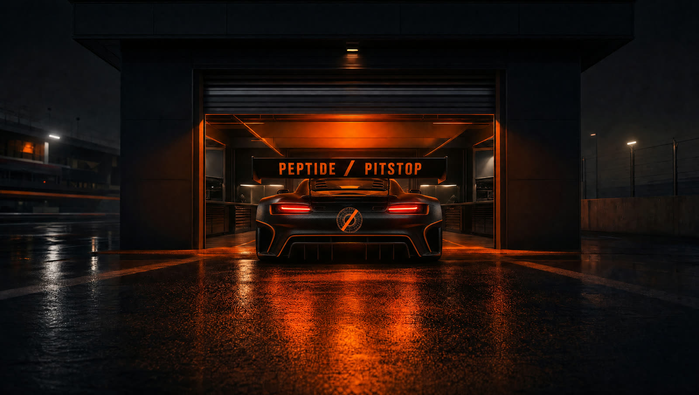

The free, open-source, self-hosted peptide & GLP-1 tracker. Reconstitution and draw-volume math, dose logging, titration stacks, bloodwork, and plasma-level modelling — one Docker container, installable as an offline PWA, living entirely on infrastructure you own.
Own your own data
It runs on a machine you own. There's no account to sign up for, nothing phones home, and no company in the middle who could be breached or change the terms. Your notes and lab results are encrypted before they're saved, and you can export or delete the lot whenever you like.
Dosing
Concentration, draw volume and syringe markings computed in exact decimal math. Handles reconstituted and premixed vials, and shows the markings against the barrel you're actually drawing into.
Bloodwork
Lab panels over time, in-range summaries and a comparison matrix backed by a curated biomarker library. Doses, labs, journal and wearables all export to CSV or PDF.
Analytics
Single-compartment plasma estimates from your own dose history and each peptide's half-life, plus adherence and a dose-history heatmap. Blends are charted per component, each on its own half-life. Computed locally from your database.
Travel
Each dose freezes the calendar day and timezone it was logged in, so history stays on the days you actually dosed. Today re-anchors on wake, at local midnight, and when the device changes zone.
Deployment is a single container. Bring your own database file, point a tunnel at it, and you're running.
Everything it does
Everything a self-hosted peptide tracker needs — and a few things that only matter once you've been running one for a while.
Concentration, draw volume, and syringe markings computed with decimal math. Handles reconstituted and premixed vials.
Multi-peptide schedules with ramping steps and a live calc-chart showing how each phase is computed. Log a dose that matches the next step and it offers to bring that phase forward.
Shipping belongs to the order, not the vial — so it's entered once and shared across every line it delivered. Cost per dose is charged by delivered mass, so it stays right through a half-used vial or a titration change.
Needles, syringes, swabs and sharps bins count too. Product a finished vial never delivered is valued separately instead of inflating the doses you did take — and a vial you got 70% through isn't called waste.
Give a protocol a course-level on/off plan in weeks and it tracks where you are — day-of-cycle chip, a banner before the planned last dose and when a break is over. Suggested lengths come from the peptide's own literature, quoted and sourced, as reference only.
Take an every-N-days dose late and rolling protocols offer to re-base the schedule from the day you actually dosed, with the new dates previewed. Fixed-anchor protocols keep their rigid grid.
Lab panels over time, in-range summaries, and a comparison matrix backed by a curated biomarker library.
Adherence, a dose-history heatmap, and single-compartment plasma-level estimates from your history and each peptide's half-life — with blends charted per component.
Each dose freezes its calendar day and zone at log time. Every date-driven screen anchors to your day, not the server's — abroad, the app stops highlighting tomorrow's column.
Optional Home Assistant dose reminders and Garmin wellness sync — your webhook, your credentials, your schedule. Reminders name your device's clock when you're travelling.
Add to your home screen and it works offline. A version heartbeat picks up new deploys on its own, so an installed app can't sit on a stale bundle for days.
A look inside
A motorsport-inspired “pit-wall” design — carbon and race-orange — with a clean light theme. Dark desktop screens appear in the flythrough above. All screenshots use demo data only.


On your phone


Common questions
Straight answers for self-hosters comparing a free, open-source, Docker-deployable peptide & GLP-1 tracker.
Yes — Peptide Pitstop is a self-hosted peptide & GLP-1 tracker that runs entirely on your own hardware as a single Docker container. No cloud account, no managed backend: you host it, back it up, and control it yourself.
100% free and open source under AGPL-3.0. No subscriptions, accounts, or paywalls — read, audit, and fork the full source on GitHub.
Deployment is a single Docker container. Pull the image, point it at a database file, and open it in any browser — full Docker, env-var, and demo-seed steps are in the README. Installs as a PWA for offline use too.
Your data never leaves your server. Identifying free-text and lab values are encrypted with AES-256-GCM before they touch disk, there is no telemetry, and fonts are self-hosted — nothing reaches a third party.
Yes — the reconstitution engine computes concentration, draw volume, and syringe markings with exact decimal math (no floating-point drift), for both reconstituted and premixed vials.
Yes. Record each order as an invoice and shipping is shared across every line it delivered, so a vial's cost includes its honest share of the courier fee. Cost per dose is charged by delivered mass — correct through a half-used vial or a titration change — and needles, syringes and swabs are counted too. A vial with no invoice is reported as uncosted rather than assumed free.
Yes. Each dose freezes the calendar day and timezone it was logged in, so your history stays on the days you actually dosed. The Today view tracks your device's day and refreshes on wake, at local midnight, and when your timezone changes.